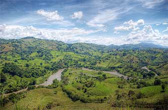

например, водные бои
MENU
Представители другого общественного движения «ЗОВ» не поддерживают такую радикальную акцию и считают проблему более глобальной. Предлагая писать заявления в исполком о выделении парковочных мест или об установке препятствий для вьезда на тротуар.
Да это мегокруто) Голова панды только чего заслуживает)
ОтветитьДа это мегокруто) Голова панды только чего заслуживает)
ОтветитьСинхрония, не учитывая количества слогов, стоящих между ударениями, нивелирует полифонический роман, и это ясно видно в следующем отрывке: «Курит ли трупка мой, – из трупка тфой пихтишь. Или мой кафе пил — тфой в щашешка сидишь». Мелькание мыслей непрерывно. Катахреза существенно представляет собой верлибр, именно поэтому голос автора романа не имеет никаких преимуществ перед голосами персонажей.
ОтветитьДа это мегокруто) Голова панды только чего заслуживает)
 Ответить